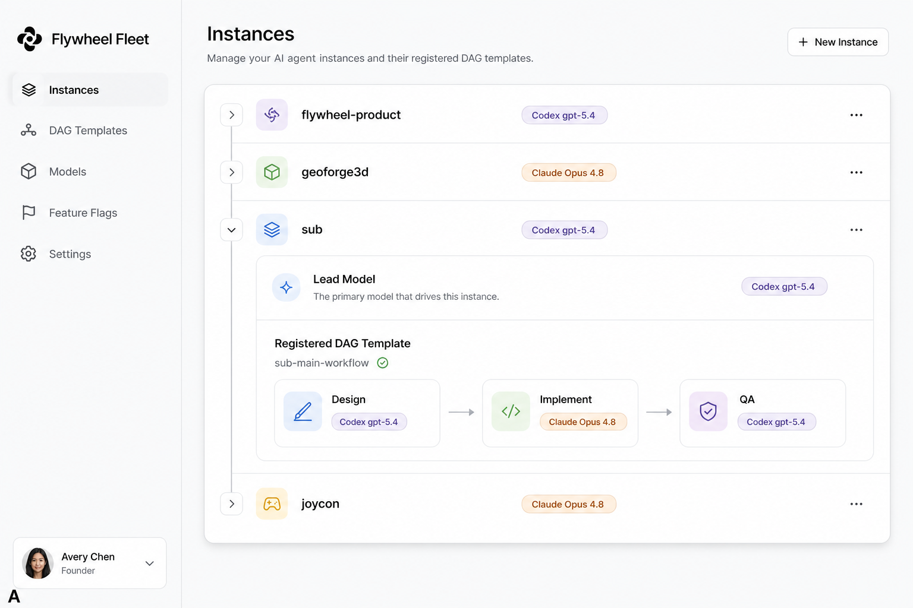
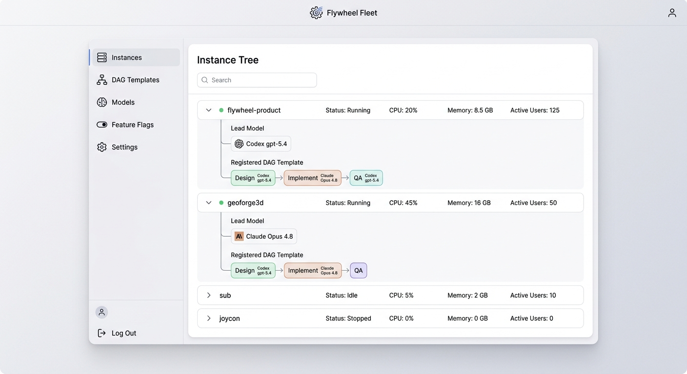
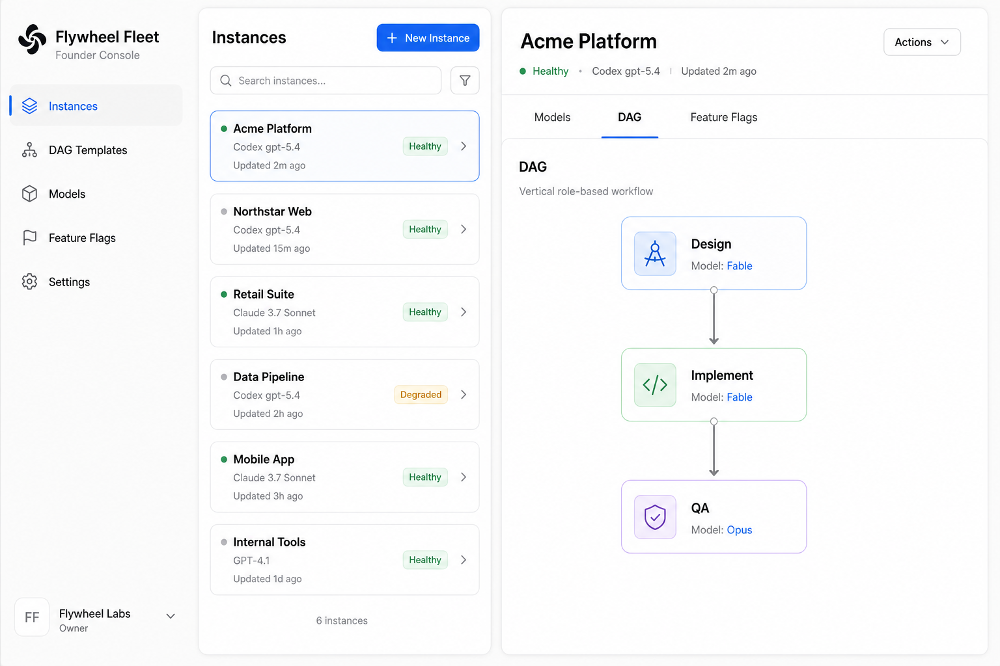
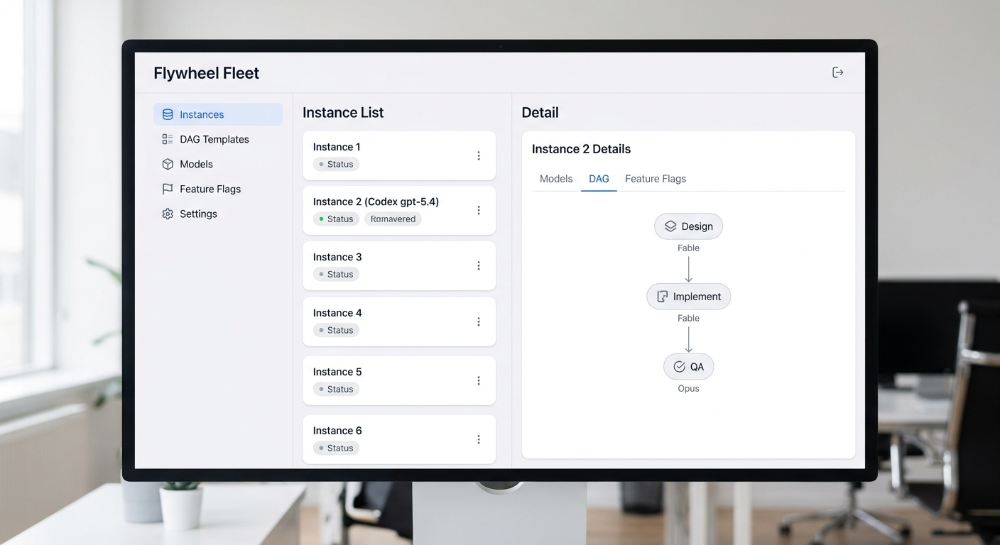
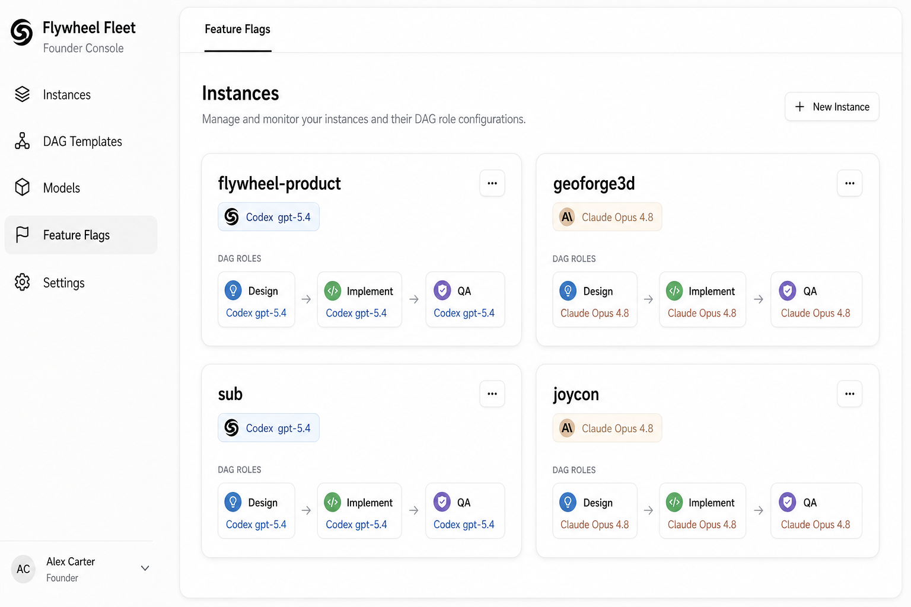
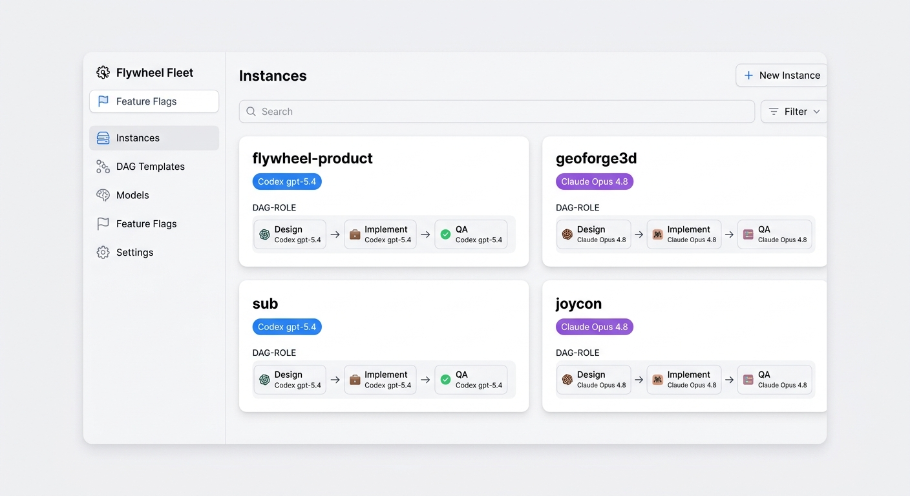

Designer(mockup-first)首次 dogfood · 先看「长什么样」,再决定 build
FLY-1059 · 每方向用 codex-image ∥ gemini-image 双模型出图(对比两种取向)
左竖 nav + 主区一棵可展开实例树;展开某实例露出 Lead 模型 + 注册的 DAG 模板(Design→Implement→QA,每节点模型徽章)。
💡 何时更好:实例越来越多、"哪个实例用哪个模型 / 哪个 DAG"是主心智时最直观——直击你说的"容易忘"。


左竖 nav + 中间实例列表 + 右侧详情(tab:Models / DAG / Feature Flags 单 tab);DAG tab 是竖向 DAG-role 节点链,每节点带模型。
💡 何时更好:单个实例配置深、要频繁改某一个实例时;右侧详情区能装下复杂 config。


左竖 nav + 顶栏含 Feature Flags 单 tab + 主区实例卡片网格;每卡片:模型 chip + 横向 DAG-role 条(🎨→🔨→🧪 每段模型)。
💡 何时更好:想一眼扫全部实例、实例数中等、偏概览时。


三个方向都满足:左竖 nav · DAG-role 显示(每类 workflow + 每节点模型)· Feature Flag 单 tab · Codex 后端显示 Codex 型号 · 无"外部托管"。
下一步:你点一个方向 → 我出高保真 HTML(真观感 + mock 数据)→ 交工程落到真 Fleet console(FLY-1038)。都不满意就再出一轮。